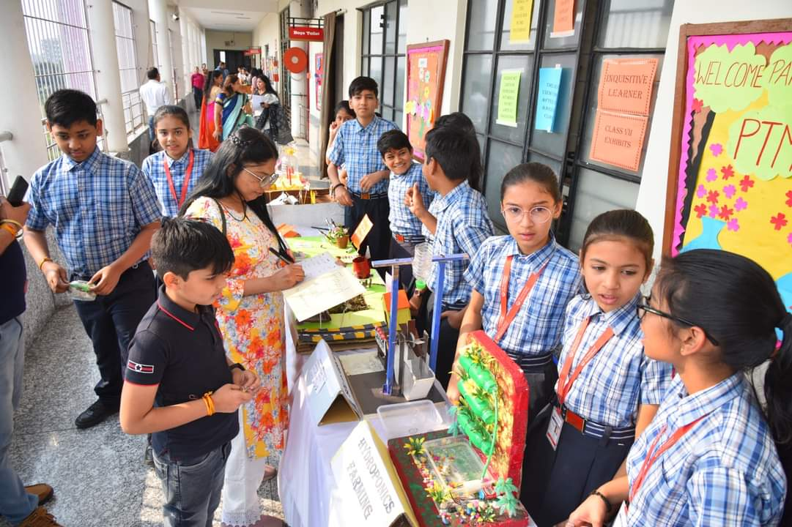

How School Exhibitions Help Students Build Confidence
Discover how interactive exhibitions improve creativity, communication, and real-world learning for students and help them become more confident in public speaking.
Read More →
Discover how interactive exhibitions improve creativity, communication, and real-world learning for students and help them become more confident in public speaking.
Read More →
Discover how interactive exhibitions improve creativity, communication, and real-world learning for students and help them become more confident in public speaking.
Read More →
Practical experiences help students understand concepts faster and improve long-term learning in a more engaging way.
Read More →
Communication, teamwork, creativity, and leadership are becoming essential skills for future student success.
Read More →
Creative school activities help students improve confidence, teamwork, communication, and leadership skills naturally.
Exhibitions encourage creativity and help students present ideas confidently in front of others.

Smart study methods and practical learning improve productivity and help students learn faster.
Practical classroom activities improve engagement and help students retain concepts for longer periods.
Communication, creativity, teamwork, and leadership are now essential future-ready student skills.

Team projects encourage leadership qualities and improve communication between students effectively.